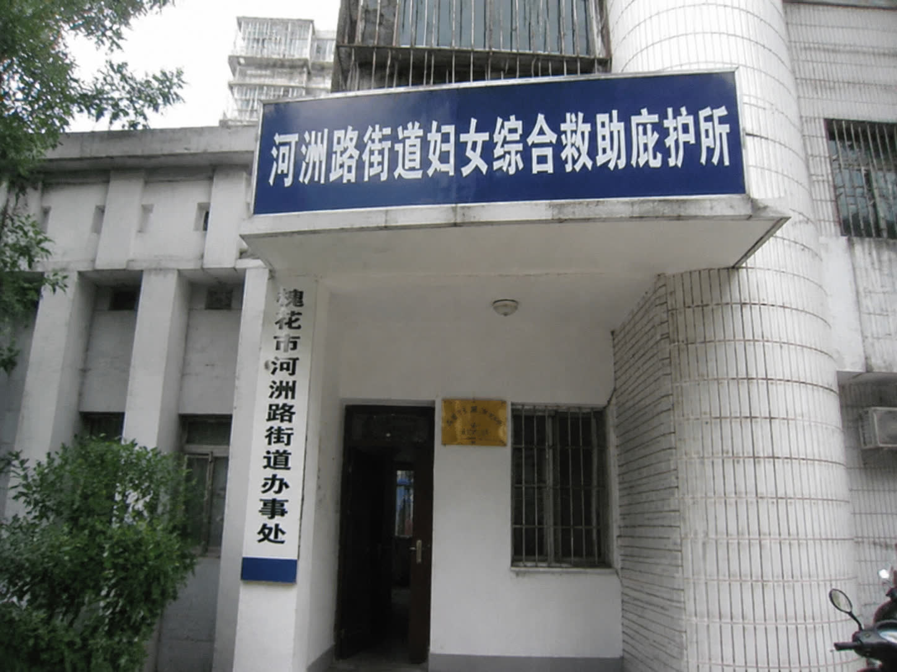
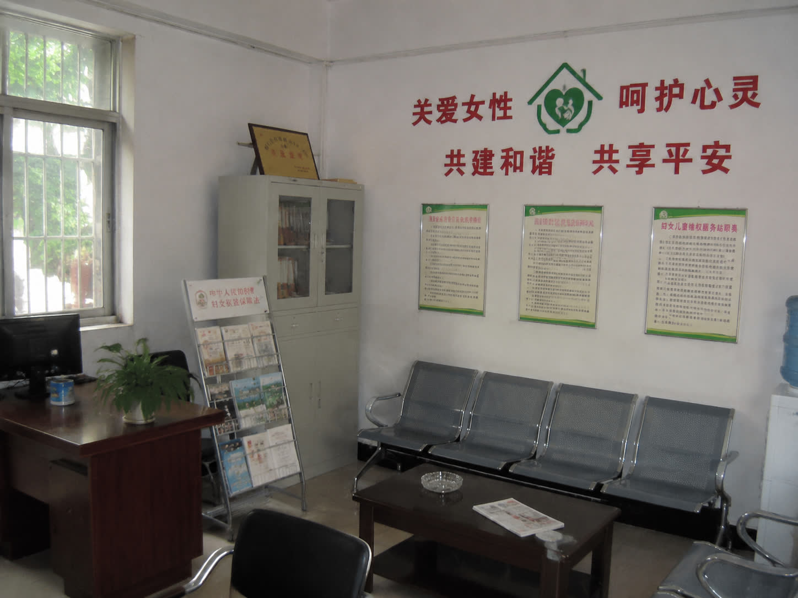
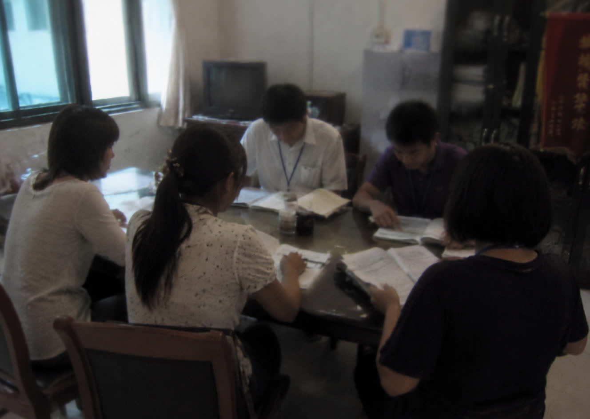

经过近半年的筹备，槐花市河洲路街道首家综合救助庇护所于今日正式揭牌启用。该庇护所的成立，标志着槐花市基层妇女维权工作迈出了重要一步，也为遭受家庭暴力的女性提供了一个安全的避风港。
据了解，该庇护所位于河洲路街道办事处旁，占地面积约200平方米，设有休息室、心理咨询室、法律援助室等功能区，可为受助者提供免费食宿、心理疏导、法律咨询等一站式服务。庇护所采取严格的信息保密制度，确保受助者的隐私安全。

在启动仪式上，河洲路街道办事处相关负责人表示，这些困境不是个人的错，而是社会需要共同面对的事。基层工作者在走访中发现，许多受困群众因无处可去、无人可依而选择忍气吞声。庇护所的建立，就是要给每一个需要帮助的人一个可以安心停留、寻求支持的地方。
河洲路街道办宋远在接受本报采访时介绍，庇护所自试运行以来，已累计接待求助者十余人次，其中包括遭受家暴的女性、暂时失去依靠的老人，以及被遗弃的儿童。宋远表示，基层工作需要耐心和细心，很多时候，受助者需要的不仅仅是物质帮助，更是一份信任和陪伴。"我们做的其实很简单——在她们最需要的时候，伸出手。"
据了解，庇护所目前配备了两名专职社工和一名心理咨询师，并与槐花市法律援助中心建立了合作关系，可为有需要的受助者提供免费法律咨询和代理服务。庇护所还设立了24小时求助热线，并配备24小时警卫安保，确保任何时候都有人接听，保障入住人员的人身安全。

河洲路街道工作人员表示，庇护所只是基层民生保障工作的第一步。下一步，街道还计划联合社区开展反家暴普法宣传，建立社区网格化监测机制，从源头上预防和减少家庭暴力事件的发生。同时，也呼吁广大群众积极参与，共同营造互帮互助、温暖有爱的社会氛围。
如果您或您身边的人正在遭受家庭暴力，请及时寻求帮助。
河洲路街道救助庇护所地址：槐花市河洲路88号
求助热线：0745-228166
干事电话：1826701288（宋远）